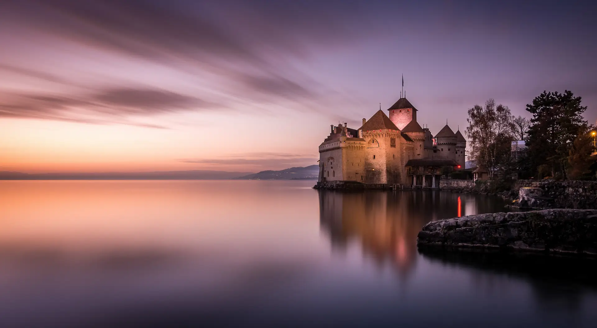

THE SWISS RIVIERA, IN WARM COLOUR
Three ways to feel
more Montreux.
Sunlit terraces. A peach evening sky. Lake Léman and the mountains beyond. Three distinct identities, with warm pastels at their heart.
Creative concepts for team review. Lake & Lavaux is the recommended starting direction; none is an approved identity. The layouts below demonstrate styling. Offers and charitable contributions remain inactive.
01 · RECOMMENDED STARTING DIRECTION
Lake & Lavaux
Warm, unhurried and rooted in place.
Peach light, cream paper and vine green.
THOUGHTFUL STAYS · MONTREUX RIVIERA
Lake days.
Your own
little Riviera.
Find your place between the lake and the mountains. Apartments and private rooms, for your kind of stay.
Find Your Stay ↗Explore the preview catalogue
A stay that fits.
Entire apartments and clearly described private rooms.
Know before you go.
A clear place for arrival steps and tourist-tax guidance.
Closer to your stay.
Book with the team behind J’adore Montreux.
The visual idea
Generous cream space, apricot hero copy and an original line drawn from the lake, ridge and terrace. Newsreader brings an editorial softness; Inter keeps booking information clear.
Palette
#FFF9F1Late Sun
#F5DCBFPeach
#EDC8B9Vine
#DDE5D4Lake
#DDEBEA
Dark lake ink #1D4350 · action #245D67. Pale colours are surfaces, never body text on white.
02 · ROMANTIC RIVIERA
Riviera Belle Époque
Promenade romance, without hotel pretence.
Soft rose, porcelain and a terrace arch.
AT HOME ON THE SWISS RIVIERA
A little romance.
A place
of your own.
Slow mornings. Lakeside walks. Return to a space that feels like yours, in beautiful Montreux.
Discover Our Stays ↗Apartments and private roomsThe charm is in the place.
The comfort is in the details.
The visual idea
A warm porcelain canvas, rose panels and an original architectural arch. Cormorant Garamond recalls promenade lettering; Inter gives practical information a contemporary rhythm.
Palette
#FFF8F0Rose
#EBD7DCPorcelain
#F0E5CFVerdigris
#D4E1D8Brass
#C6A46E
Plum ink #403748 · action #765365. Brass is a decorative accent, with no small text or essential controls.
03 · CONTEMPORARY SWISS RIVIERA
Modern Riviera
Swiss clarity with a sunlit personality.
Butter, coral and a generous horizon.
MONTREUX RIVIERA · SWITZERLAND
Your place.
Your Riviera.
Clear choices.
Warm welcomes.
A lake worth lingering by.
Apartments & Rooms02
Arrival Made Clear03
The Riviera, Your Way
The visual idea
A clear Swiss grid, oversized Fraunces headlines, Inter labels and original horizon lines. Warm butter and coral lead; powder blue and pistachio add space to breathe.
Palette
#FFFDF7Butter
#F4EBCBCoral
#F4D8CCPistachio
#E5E9D8Powder
#DCEAF1
Lake ink #204454 · action #1C6370. The composition feels warm even when the layout is structured.
WHAT THE TEAM SHOULD ASSESS
Does it feel like
our Riviera?
Compare warmth, local character, clarity and credibility. The booking journey, room descriptions and arrival requirements stay factual in every direction. A preferred visual direction should then be tested with guests against completed direct bookings and net revenue.
Read the Complete Style Guide ↗Return to the Functional Website Preview ↗